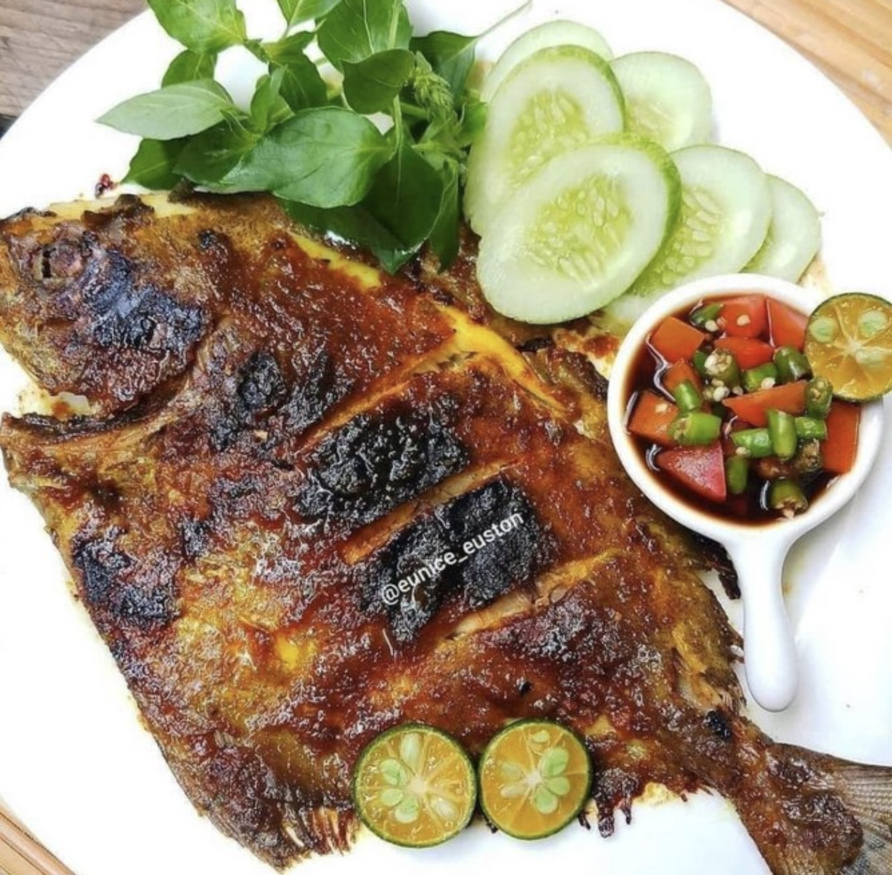

Bahan bahan
- Ikan Nila
- kecap manis
- garam
- margarin/mentega
Bumbu
- bawang merah, bawang merah
- 1 sdt merica/merica bubuk
- 3 butir kemir
- 1 ruas jahe
- asam jawa larutkan dengan 5 sdm air panas
Cara Pembuatan
- Haluskan semua bumbu campur jadi satu
- Olesi ikan dengan bumbu
- Bakar ikan dengan api kecil bolak balik ikan sembari diolesi bumbu agar meresap sempurna
- Cek rasa dan sajikan.